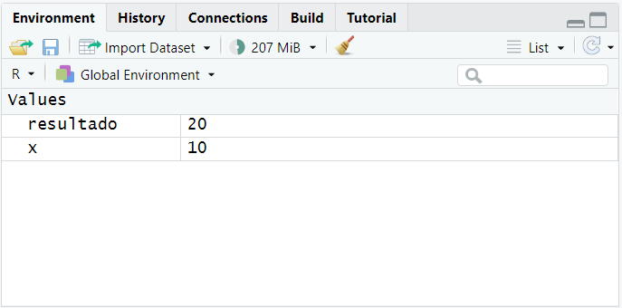
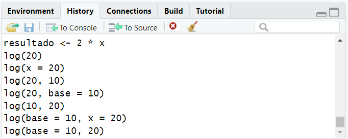
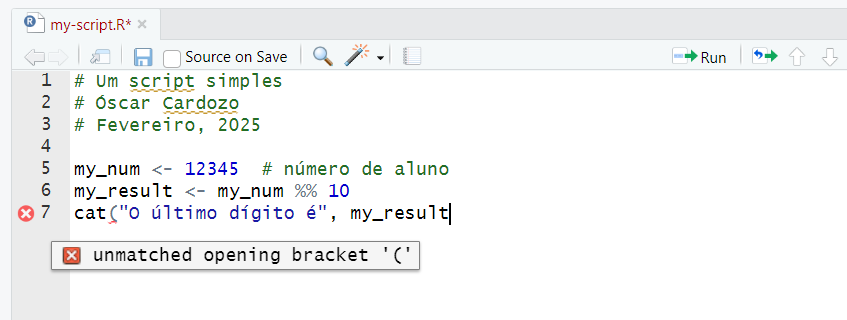

> 3 * 4
[1] 12
> (7 + 2) / 8
[1] 1.125
> sin(pi / 2)
[1] 18 Introdução ao R
Neste tutorial faz-se uma introdução ao R, visitando a forma de emitir comandos, a sintaxe básica e a manipulação de objetos.
8.1 Cálculos interativos
Vamos utilizar a consola para emitir alguns comandos. A consola do R pode ser visto como uma calculadora sofisticada. Assim, ela pode ser utilizada para fazer diversos tipos de cálculos. Alguns exemplos:
Nos cálculos acima foram apenas utilizados valores literais (3, 4, …), operadores (+, /), funcões (sin()) e a constante pi.
Uma instrução longa pode ser colocada em várias linhas. Depois de introduzir a primeira linha, caso o código não esteja completo o R apresenta o símbolo + em vez do habitual >. Por exemplo, se escrevêssemos:
sin(pi / 2
+O símbolo + indica que a instrução não está completa, neste caso falta um ), um lapso frequente.
Dica
Eventualmente, já reparou que o RStudio introduz automaticamente pares de parêntese, (), e de aspas, '' ou "", quando se coloca o primeiro. Este comportamento ajuda a evitar lapsos.
Começando pelos operadores, as secções seguintes exemplificam como pode ser utilizado o R. Se já tem experiência de outras linguagens de programação, verá que o R vai ter pontos em comum.
8.2 Operadores
Para além das operações algébricas elementares, há outros conjuntos de operadores. Segue uma lista de operadores que se usam frequentemente:
Operadores algébricos:
-,+,/,*,^(expoente),%%(resto),%/%(divisão inteira).Operadores de comparação:
<,<=,==,>=,>,!=.Operadores lógicos:
&(e),|(ou),!(negação),%in%(pertença).
Alguns exemplos da utilização de operadores:
> 5 %/% 2
[1] 2
> 5 %% 2
[1] 1
> 5 > 2
[1] TRUE
> !(5 > 2)
[1] FALSE8.3 Erros e alertas
Se estiver a acompanhar o tutorial na sua instalação do R, provavelmente, já se terá deparado com um ou outro erro, à semelhança do exemplo seguinte:
2 x 3
Error: unexpected symbol in "2 x"Tal é perfeitamente normal. Tipicamente, o R emite um erro sempre que não entende uma instrução. Tal como na linguagem comum, quando alguém tenta comunicar qualquer coisa que não entendemos, temos que pedir para repetir. O erro é a forma do R transmitir que não entendeu.
No exemplo acima, em vez da letra x, para multiplicar, o correto seria 2 * 3. O R não entende a letra x naquele contexto.
Dica
Tal como na vida, para nos fazermos entender, temos que aprender a comunicar. Neste caso, na linguagem R.
Para uma melhor concetualização da origem dos erros, como os evitar e corrigir, podemos identificar três tipos de erros:
Erros sintáticos: ocorrem quando uma regra da linguagem é violada, tal como acima, no exemplo da multiplicação. Os erros de sintaxe mais comuns são parênteses não balanceados e falta de vírgulas (ou usar a vírgula como separador decimal). Tipicamente são fáceis de detetar e corrigir.
Erros semânticos: a instrução está correta do ponto de vista sintático mas, por algum motivo, a instrução não pode ser executada, por exemplo:
> 2 * taxa Error: object 'taxa' not foundNeste caso, a sintaxe está correta, segue todas as regras da linguagem. Queremos multiplicar 2 por um objeto designado por
taxa, mas, aparentemente, o objetotaxanão foi definido previamente.Por norma, o R também produz uma mensagem, sendo erros fáceis de corrigir.
Erros lógicos: neste caso, o código é válido, mas o resultado não é o desejado. Por exemplo se queremos multiplicar 4 pela soma de 3 com 2, cujo resultado é 20, o seguinte código está errado:
> 4 * 3 + 2 [1] 14Como se percebe facilmente, faltam os parênteses a envolver a soma. Este tipo de erros pode ser difícil de encontrar pois o R não emite nenhum alerta, visto a operação pedida ser perfeitamente válida. Só não é o que se pretendia.
Note-se que a distinção entre as categorias e as próprias designações são discutíveis, havendo definições algo diferentes. O que se apresentou é apenas uma forma de conceptualizar os diferentes tipos de erros.
Para além dos erros, o R também emite alertas (warnings) quando a operação pode ser válida, mas costuma originar erros lógicos. Neste caso, o código é executado, o resultado é apresentado, mas é emitido um alerta.
8.4 Objetos
No R, um objeto é simplesmente uma estrutura para guardar informação na memória do computador. O objeto tem que ter um nome que o identifique e pelo qual podemos aceder ao seu conteúdo. O conteúdo pode ser diverso. Vamos criar o primeiro objeto deste tutorial:
> x <- 10No exemplo acima cria um objeto designado por x (nome do objeto) e que contém o número 10. O símbolo <- (composto por um menor e um menos que, no RStudio pode ser obtido com a combinação de teclas AltAlt+--) é o operador de atribuição e atribui o valor da expressão da direita ao objeto cujo nome está do lado esquerdo. Se o objeto ainda não existia é criado, senão, o valor é atualizado.
Depois de criado, o objeto pode ser utilizado como se se tratasse de um valor literal. Na expressão seguinte o x poderia ser substituído por pelo seu valor, 10.
> resultado <- 2 * x
> resultado
[1] 20Para inspecionar o valor de um objeto, basta digitar o nome na consola ou verificar o painel Environment (Figura 8.1).

Deve ter-se em atenção que os nomes dos objetos devem cumprir as seguintes regras:
- Iniciar com uma letra.
- Conter apenas letras, números, ponto (
.) e o traço inferior (_), sem espaços. - Não serem palavras reservadas, por exemplo,
TRUE,FALSE,if, etc.
Ademais, os nomes devem ser curtos (fáceis de escrever) e com significado (pista sobre o conteúdo).
O objeto criado acima é do tipo numérico, no entanto, um objeto pode ser de qualquer tipo, desde os tipos elementares e estruturas definidas pelo R, até tipos mais complexos definidos por pacotes adicionais ou pelo utilizador.
8.5 Tipos de dados elementares
O R define seis tipos de dados elementares que podem depois ser agrupados em estruturas mais complexas. O tipos elementares de dados são:
- Numérico (numeric): para armazenar números (
10,-4.25, etc.). - Lógico (logical): para armazenar os valores
TRUEeFALSE(ouTeF). - Texto (character): para armazenar texto (
"exemplo de texto"). - Inteiro (integer): para armazenar apenas números inteiros, não havendo muitas situações em que seja necessário usar este tipo em específico, uma vez que estes números podem ser representados pelo tipo numérico.
- Complexo (complex): para armazenar números complexos (
2+6i). - Bruto (raw): para armazenar bytes (sequencias de zeros e uns) em bruto.
Enquanto que os três últimos tipos apenas têm interesse em situações muito específicas, os três primeiros (numérico, lógico e texto) são de utilização frequente, sendo a espinha dorsal da maior parte das estruturas de dados.
Por vezes os números são representados na notação científica e o R consegue lidar com isso. Por exemplo, as seguintes operações são válidas:
> 1e2 + 1
[1] 101
> 1000 * 1000
[1] 1e+06
> 1 / 1E7
[1] 1e-078.6 Valores especiais
No R existem alguns valores especiais que podem ser atribuídos aos objetos:
NULL: quando um objeto contémNULLsignifica que não tem conteúdos. Frequentemente, este valor é atribuído na sequência de erros no código.NA: é utilizado para informar que a informação está em falta (Not Available). Por exemplo, num inquérito, às respostas em branco é atribuído o valorNA.NaN: significa Not a Number e resulta de operações aritméticas impossíveis, por exemplo,0 / 0.Inf: representa infinito e é o resultado de algumas operações aritméticas, por exemplo,1 / 0. Também pode ocorrer o valor-Inf.
8.7 Funções
Tal como na Matemática e outras linguagens de programação, no R também existem funções. Uma função recebe um conjunto de entradas (números, texto, objetos, etc.) e produz um resultado.
Por exemplo, para calcular o logaritmo natural de um número, podemos fazer:
> log(20)
[1] 2.995732Uma função recebe informação sob a forma de entradas ou argumentos. Para invocar uma função, a sintaxe é:
> nome_da_funcao(argumento1 = valor1, argumento2 = valor2, ...)A chamada da função log() poderia ter sido feita na forma mais explícita:
> log(x = 20)
[1] 2.995732Isto porque o nome do primeiro argumento desta função é x. Sempre que seja óbvio o que o argumento representa, o nome pode ser omitido. Note-se o código a seguir:
> log(20, 10)
[1] 1.30103Neste caso já não é óbvio que está a ser calculado o logaritmo decimal, ou seja, a base do logaritmo é 10. Uma forma tornar o código mais claro seria:
> log(20, base = 10)
[1] 1.30103De facto, a função log() tem 2 argumentos, x e base. Quando a base é omitida o R utiliza a base natural, \(e\approx\) 2.72. Quase todas as funções têm argumentos definidos por omissão, podendo esta informação ser encontrada na documentação.
Quando o nome dos argumentos é omitido, o R atribui os valores aos argumentos pela ordem predefinida para a função. Neste exemplo, na função log(), a ordem dos argumentos é x e depois base. Por exemplo:
> log(10, 20)
[1] 0.7686218calcula o logaritmo de 10 na base 20. Se os nomes não forem omitidos, os argumentos podem estar em qualquer ordem. Poder-se-ia fazer:
> log(base = 10, x = 20)
[1] 1.30103ou
> log(base = 10, 20)
[1] 1.30103para se obter o logaritmo decimal. Estas últimas formas de invocar a função, embora sintaticamente corretas, são menos naturais e mais confusas, pelo que se recomenda evitar.
8.8 Regras e estilo
Para evitar erros, é necessário seguir as regras da linguagem, particularmente as regras de sintaxe. Havendo muitas mais regras que as expostas acima, a maior parte delas são muito específicas e de aplicação infrequente. Em caso de dúvida, podemos sempre consultar a documentação ou pesquisar na internet. Também se pode ter à mão uma cábula referência (cheatsheet), tal como a do R Base.
Para lá das regras há ainda a questão do estilo, que deve seguir uma série de convenções, especialmente se o trabalho for colaborativo. Sobre este assunto, recomenda-se a consulta de https://style.tidyverse.org/.
O R é case sensitive, isto é, usar letra maiúscula ou minúscula faz diferença. Por exemplo podemos ter simultaneamente um objeto chamado
alunoe um objeto chamadoAluno. Claramente, isto é confuso e propenso a erros.Por uma questão de consistência, nos nomes dos objetos, é recomendado o uso de minúscula, separando palavras com o traço baixo. Por exemplo, usar
primeiro_nomeem vez dePrimeiroNomeouprimeiro.nomeouPRIMEIRO_NOMEou outras variantes.Deve ter-se em atenção a prioridade entre operadores. Por exemplo, as multiplicações são feitas antes das somas. Deve certificar-se que coloca parênteses sempre que necessário e que estes ficam balanceados.
Uma outra questão de estilo é o uso do espaço entre símbolos. Embora não seja obrigatório, torna o código muito mais legível. Por exemplo
2*3/4é o mesmo que2 * 3 / 4, mas a segunda versão é muito mais legível.
Dica
Qualquer idiota consegue escrever código que o computador consegue entender. Os bons programadores escrevem código que os humanos conseguem entender. Martin Fowler, 2008.
8.9 Automatismos do RStudio
Para simplificar o trabalho com o R e aumentar a produtividade, o RStudio incorpora um vasto conjunto de automatismos. Relembram-se alguns que já foram referidos acima:
Introdução automática de pares de parêntesis,
(), aspas,''e duplas aspas"".Atalho para o operador de atribuição, AltAlt+--. Automaticamente o operador é rodeado de espaços. É um dos atalhos de teclado mais úteis, pois é muito frequente e poupa a digitação de 4 símbolos.
A qualquer momento, no RStudio, é possível aceder a uma lista de todos os atalhos com CtrlCtrl+ShiftShift+KK. Para aumentar a produtividade a memorização dos atalhos do teclado mais frequentes é uma ferramenta importante.
8.9.1 Completar o código
Ao digitar código, o RStudio oferece alternativas para completar o que se está a digitar. Esta funcionalidade é particularmente útil, pois os nomes de objetos ou de funções podem ser longos.
Assim, depois de digitar as primeiras 3 letras de um nome, o RStudio oferece uma lista de alternativas compatíveis. Para escolher uma das alternativas basta navegar a lista com as teclas direcionais (↓↓ e ↑↑) e confirmar a escolha com uma das teclas ↹↹, →→ ou ↵↵.
Adicionalmente, estão disponíveis as teclas EscEsc para cancelar a escolha e a F1F1 para invocar a ajuda, caso se trate de uma função. Este mecanismo também pode ser despoletado a qualquer momento usando a tecla ↹↹.
8.9.2 Histórico de comandos
Podemos aceder facilmente ao histórico de comandos através do painel History (Figura 8.2). Utilizando o mecanismo de copiar e colar ou, mais facilmente, o botão To Console, um comando anterior pode ser repetido.

Esta operação pode ser feita mais rapidamente com o teclado. Assim, na consola, a pressionar ↑↑ e ↓↓ os comandos anteriores são imediatamente copiados para a consola, bastando ↵↵ para os executar.
Também pode ser aberta uma lista de comandos anteriores, à semelhança do mecanismo de completar o código. Para invocar a lista, basta utilizar a combinação CtrlCtrl+↑↑.
8.10 Scripts
Embora se possa emitir qualquer comando a partir da consola, esta apresenta algumas limitações:
Em comandos muito extensos, eventualmente com várias linhas, a edição na consola torna-se desconfortável.
Embora todos os comandos fiquem registados no painel History, não é muito eficiente andar no histórico a procurar comandos sempre que sejam necessários.
Se o trabalho for colaborativo, podemos querer partilhar uma sequência de operações de forma autónoma.
A maneira de ultrapassar aqueles inconvenientes da consola é utilizando scripts. Um script é apenas um ficheiro de texto que pode conter conjuntos de instruções e comentários e que pode ser editado, guardado e o código executado sempre que seja necessário.
Pode criar-se um script no RStudio com File > New File > R Script ou CtrlCtrl+ShiftShift+NN. Normalmente, o ficheiro contém alguns comentários no topo, dando informações sobre o conteúdo, o autor e a data, seguidos de código, por exemplo:
# Um script simples
# Óscar Cardozo
# Fevereiro, 2025
my_num <- 12345 # número de aluno
my_result <- my_num %% 10
cat("O último dígito é", my_result)Note que tudo o que segue o símbolo # numa determinada linha é um comentário e, portanto, não é interpretado pelo R.
Agora pode salvar o script. Relativamente ao nome do ficheiro, tenha em atenção:
- O nome do ficheiro contém a extensão .R.
- Evitar caracteres acentuados, símbolos, espaços e misturas de maiúsculas e minúsculas.
- O nome deve ter significado e dar uma pista sobre o conteúdo.
- Se tiver vários ficheiros na mesma pasta, pense na ordenação.
Os comandos contidos no script podem também ser executados de várias formas:
Com o botão Run ou CtrlCtrl+↵↵ executa a linha corrente ou o código selecionado. É um recurso ótimo para executar o código linha a linha.
Com o botão Source ou CtrlCtrl+ShiftShift+SS executa todos os comandos do script.
À medida que o código é editado o RStudio vai diagnosticando e assinalando problemas e potenciais problemas junto ao número da linha. A Figura 8.3 ilustra a situação. No exemplo, falta fechar o parênteses na última instrução, facto que o RStudio deteta e assinala.
